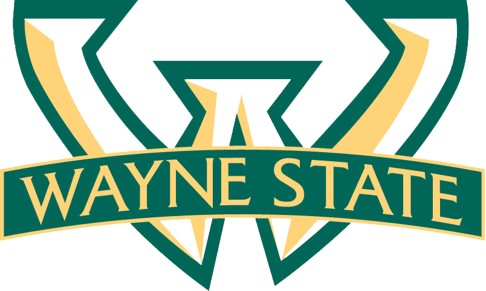

Created by The MeritCommons Action Team
Streams: these are message streams or lists of messages that users can create, and subsequently subscribe to, or be automatically subscribed to
Each stream may have many ...
Authors: users with the ability to write messages to the streams
Subscribers: users with the ability to read messages written to the streams
Moderators: users with the ability to add and remove other moderators, authorize authors, and authorize subscribers where required
The Merge: a merged message list consisting of all of the logged in user's subscribed streams
Gizmo: a micro application embedded in a message
MeritCommonscoins: a virtual currency designed to allow groups and organizations to send mass messages to large-audience capable streams such as All Students, All Staff, and All Faculty
~
Hydrant: a websocket-enabled hookup for realtime messages and events from the MeritCommons system
Inbound: a JSON-RPC capable web resource that receives messages heading into the system
Supplier: a program that retrieves content from an external system and delivers that content to inbound as an MeritCommons Message
Consumer: a cryptographically authenticated program which subscribes to one or more messages and "consumes" (processes) their replies and activity.
~
~
~